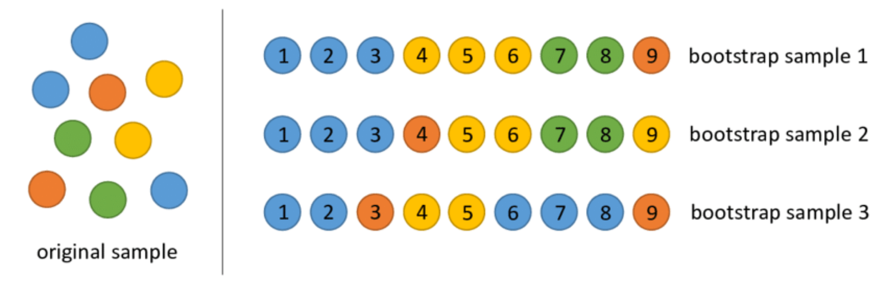
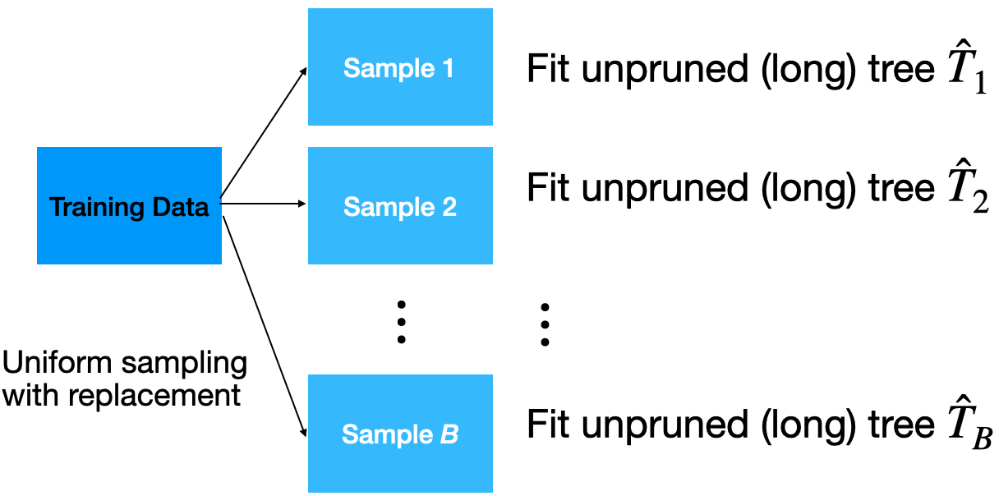
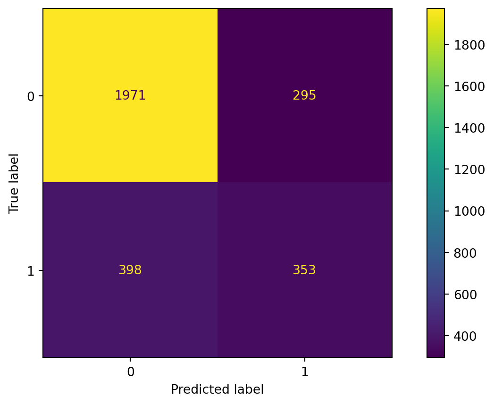
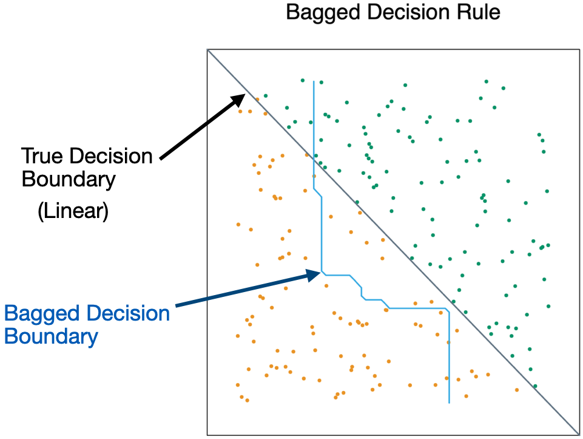
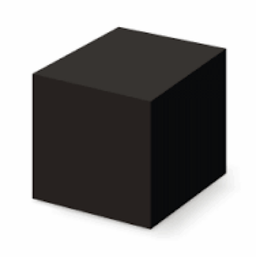

# Importing necessary libraries
import pandas as pd
import matplotlib.pyplot as plt
import seaborn as sns
from sklearn.model_selection import train_test_split
from sklearn.tree import DecisionTreeClassifier, plot_tree
from sklearn.ensemble import BaggingClassifier, RandomForestClassifier
from sklearn.neighbors import KNeighborsClassifier
from sklearn.preprocessing import StandardScaler
from sklearn.metrics import confusion_matrix, ConfusionMatrixDisplay
from sklearn.metrics import accuracy_score, recall_score, precision_scoreEnsemble Methods
IN5148: Statistics and Data Science with Applications in Engineering
Agenda
- Introduction to Ensemble Methods
- Bagging
- Random Forests
Ensamble Methods
Load the libraries
Before we start, let’s import the data science libraries into Python.
Here, we use specific functions from the pandas, matplotlib, seaborn and sklearn libraries in Python.
Decision trees
Simple and useful for interpretations.
Can handle continuous and categorical predictors and responses. So, they can be applied to both classification and regression problems.
Computationally efficient.

Limitations of decision trees
In general, decision trees do not work well for classification and regression problems.
However, decision trees can be combined to build effective algorithms for these problems.
Ensamble methods
Ensemble methods refer to frameworks to combine decision trees.
Here, we will cover a popular ensamble method:
Bagging. Ensemble many deep trees.
- Quintessential method: Random Forests.
Bagging
Bootstrap samples
Bootstrap samples are samples obtained with replacement from the original sample. So, an observation can occur more than one in a bootstrap sample.
Bootstrap samples are the building block of the bootstrap method, which is a statistical technique for estimating quantities about a population by averaging estimates from multiple small data samples.

Bagging
Given a training dataset, bagging averages the predictions from decision trees over a collection of bootstrap samples.

Predictions
Let \(\mathbf{x} = (x_1, x_2, \ldots, x_p)\) be a vector of new predictor values. For classification problems with 2 classes:
Each classification tree outputs the probability for class 1 and 2 depending on the region \(\mathbf{x}\) falls in.
For the b-th tree, we denote the probabilities as \(\hat{p}^{b}_0(\boldsymbol{x})\) and \(\hat{p}^{b}_1(\boldsymbol{x})\) for class 0 and 1, respectively.
- Using the probabilities, a standard tree follows the Bayes Classifier to output the actual class:
\[\hat{T}_{b}(\boldsymbol{x}) = \begin{cases} 1, & \hat{p}^{b}_1(\boldsymbol{x}) > 0.5 \\ 0, & \hat{p}^{b}_1(\boldsymbol{x}) \leq 0.5 \end{cases}\]
- Compute the proportion of trees that output a 0 as
\[p_{bag, 0} = \frac{1}{B} \sum_{b=1}^{B} I(\hat{T}_{b}(\boldsymbol{x}) = 0).\]
- Compute the proportion of trees that output a 1 as:
\[p_{bag, 1} = \frac{1}{B}\sum_{b=1}^{B} I(\hat{T}_{b}(\boldsymbol{x}) = 1).\]
- Classify according to a majority vote between \(p_{bag, 0}\) and \(p_{bag, 1}\).
Implementation
How many trees? No risk of overfitting, so use plenty.
No pruning necessary to build the trees. However, one can still decide to apply some pruning or early stopping mechanism.
The size of bootstrap samples is the same as the size of the training dataset, but we can use a different size.
Example 1
The data “AdultReduced.xlsx” comes from the UCI Machine Learning Repository and is derived from US census records. In this data, the goal is to predict whether a person’s income was high (defined in 1994 as more than $50,000) or low.
Predictors include education level, job type (e.g., never worked and local government), capital gains/losses, hours worked per week, country of origin, etc. The data contains 7,508 records.
Read the dataset
# Load the data
Adult_data = pd.read_excel('AdultReduced.xlsx')
# Preview the data.
Adult_data.head(3)| age | workclass | fnlwgt | education | education.num | marital.status | occupation | relationship | race | sex | capital.gain | capital.loss | hours.per.week | native.country | income | |
|---|---|---|---|---|---|---|---|---|---|---|---|---|---|---|---|
| 0 | 39 | State-gov | 77516 | Bachelors | 13 | Never-married | Adm-clerical | Not-in-family | White | Male | 2174 | 0 | 40 | United-States | small |
| 1 | 50 | Self-emp-not-inc | 83311 | Bachelors | 13 | Married-civ-spouse | Exec-managerial | Husband | White | Male | 0 | 0 | 13 | United-States | small |
| 2 | 38 | Private | 215646 | HS-grad | 9 | Divorced | Handlers-cleaners | Not-in-family | White | Male | 0 | 0 | 40 | United-States | small |
Selected predictors.
- age: Age of the individual.
- sex: Sex of the individual (male or female).
- race: Race of the individual (W, B, Amer-Indian, Amer-Pacific, or Other).
- education.num: number of years of education.
- hours.per.week: Number of work hours per week.
# Choose the predictors.
X_full = Adult_data.filter(['age', 'sex', 'race', 'education.num',
'hours.per.week'])Pre-processing for categorical predictors
Unfortunately, bagging does not work with categorical predictors. We must transform them into dummy variables using the code below.
# Turn categorical predictors into dummy variables.
X_dummies = pd.get_dummies(X_full[['sex', 'race']])
# Drop original predictors from the test.
X_other = X_full.drop(['sex', 'race'], axis=1)
# Update the predictor matrix.
X_full = pd.concat([X_other, X_dummies], axis=1)Set the target class
Let’s set the target class and the reference class using the get_dummies() function.
# Select answer
Y = Adult_data.filter(['income'])
# Create dummy variables.
Y_dummies = pd.get_dummies(Y, dtype = 'int')
# Show.
Y_dummies.head(4)| income_large | income_small | |
|---|---|---|
| 0 | 0 | 1 |
| 1 | 0 | 1 |
| 2 | 0 | 1 |
| 3 | 0 | 1 |
Here we’ll use the large target class. So, let’s use the corresponding column as our response variable.
# Choose target category.
Y_target = Y_dummies['income_large']
Y_target.head()0 0
1 0
2 0
3 0
4 1
Name: income_large, dtype: int64Training and validation datasets
To evaluate a model’s performance on unobserved data, we split the current dataset into training and validation datasets. To do this, we use train_test_split() from scikit-learn.
# Split into training and validation
X_train, X_valid, Y_train, Y_valid = train_test_split(X_full, Y_target,
test_size = 0.2)We use 80% of the dataset for training and the rest for validation.
Bagging in Python
We define a bagging algorithm for classification using the BaggingClassifier function from scikit-learn.
The n_estimators argument is the number of decision trees to generate in bagging. Ideally, it should be high, around 500.
# Set the bagging algorithm.
Baggingalgorithm = BaggingClassifier(n_estimators = 500,
random_state = 59227)
# Train the bagging algorithm.
Baggingalgorithm.fit(X_train, Y_train)random_state allows us to obtain the same bagging algorithm in different runs of the algorithm.
Predictions
Predict the classes using bagging.
predicted_class = Baggingalgorithm.predict(X_valid)
predicted_classarray([0, 0, 1, ..., 0, 0, 0])Confusion matrix
# Compute confusion matrix.
cm = confusion_matrix(Y_valid, predicted_class)
# Visualize the matrix.
ConfusionMatrixDisplay(cm).plot()
Accuracy
The accuracy of the bagging classifier is 78%.
# Compute accuracy.
accuracy = accuracy_score(Y_valid, predicted_class)
# Show accuracy.
print( round(accuracy, 2) )0.76A single deep tree
To compare the bagging, let’s use a single deep tree.
Code
# We tell Python that we want a classification tree
clf_simple = DecisionTreeClassifier(ccp_alpha=0.0,
random_state=507134)
# We train the classification tree using the training data.
clf_simple.fit(X_train, Y_train)Let’s compute the accuracy of the pruned tree.
single_tree_Y_pred = clf_simple.predict(X_valid)
accuracy = accuracy_score(Y_valid, single_tree_Y_pred)
print( round(accuracy, 2) )0.75Advantages
Bagging will have lower prediction errors than a single classification tree.
The fact that, for each tree, not all of the original observations were used, can be exploited to produce an estimate of the accuracy for classification.
Limitations
Loss of interpretability: the final bagged classifier is not a tree, and so we forfeit the clear interpretative ability of a classification tree.
Computational complexity: we are essentially multiplying the work of growing (and possibly pruning) a single tree by B.
Fundamental issue: bagging a good model can improve predictive accuracy, but bagging a bad one can seriously degrade predictive accuracy.
Other issues
Suppose a variable is very important and decisive.
It will probably appear near the top of a large number of trees.
And these trees will tend to vote the same way.
In some sense, then, many of the trees are “correlated”.
This will degrade the performance of bagging.
- Bagging is unable to capture simple decision boundaries

Random Forest
Random Forest
Exactly as bagging, but…
- When splitting the nodes using the CART algorithm, instead of going through all possible splits for all possible variables, we go through all possible splits on a random sample of a small number of variables \(m\), where \(m < p\).
Random forests can reduce variability further.
Why does it work?
Not so dominant predictors will get a chance to appear by themselves and show “their stuff”.
This adds more diversity to the trees.
The fact that the trees in the forest are not (strongly) correlated means lower variability in the predictions and so, a bettter performance overall.
Tuning parameter
How do we set \(m\)?
- For classification, use \(m = \lfloor \sqrt{p} \rfloor\) and the minimum node size is 1.
In practice, sometimes the best values for these parameters will depend on the problem. So, we can treat \(m\) as a tuning parameter.
Note that if \(m = p\), we get bagging.
The final product is a black box

A black box. Inside the box are several hundred trees, each slightly different.
You put an observation into the black box, and the black box classifies it or predicts it for you.
Random Forest in Python
In Python, we define a RandomForest algorithm for classification using the RandomForestClassifier function from scikit-learn. The n_estimators argument is the number of decision trees to generate in the RandomForest, and random_state allows you to reprudce the results.
# Set the bagging algorithm.
RFalgorithm = RandomForestClassifier(n_estimators = 500,
random_state = 59227)
# Train the bagging algorithm.
RFalgorithm.fit(X_train, Y_train)Confusion matrix
Evaluate the performance of random forest.
Code
# Predict class.
RF_predicted = RFalgorithm.predict(X_valid)
# Compute confusion matrix.
cm = confusion_matrix(Y_valid, RF_predicted)
# Visualize the matrix.
ConfusionMatrixDisplay(cm).plot()Accuracy
The accuracy of the random forest classifier is 79%.
# Compute accuracy.
accuracy = accuracy_score(Y_valid, RF_predicted)
# Show accuracy.
print( round(accuracy, 2) )0.77